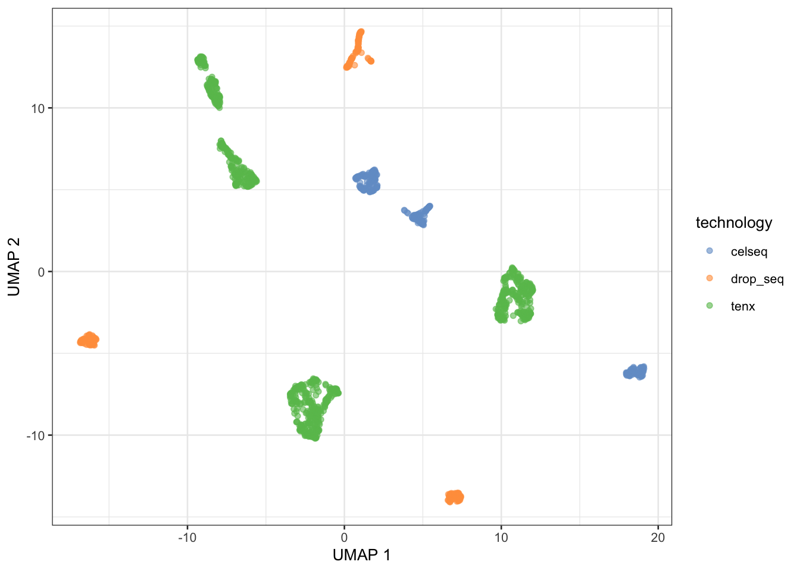
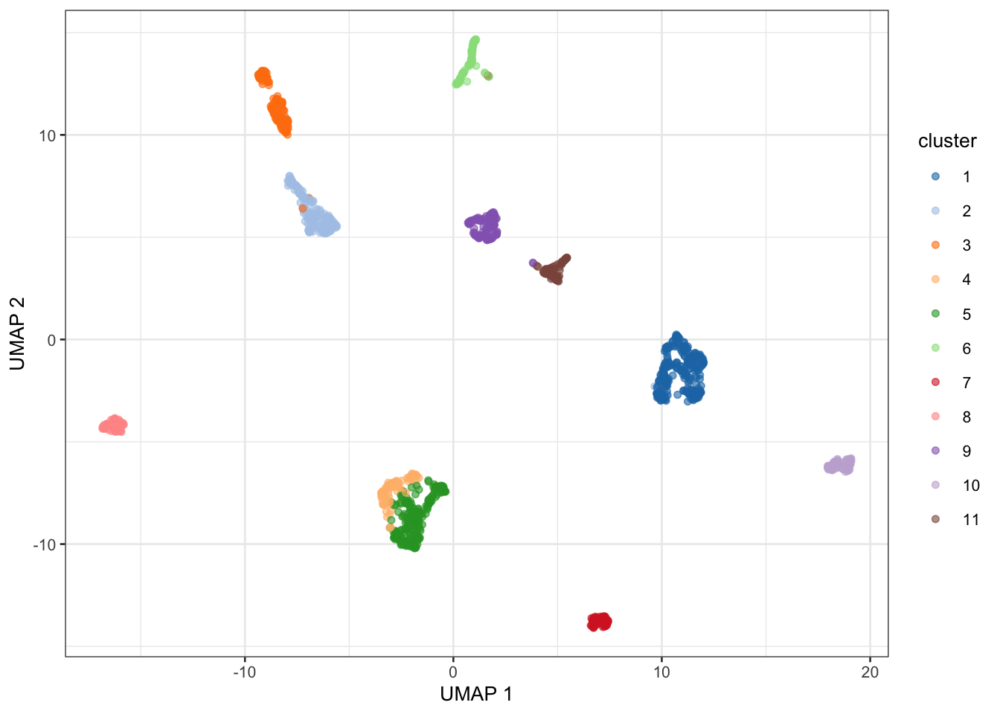
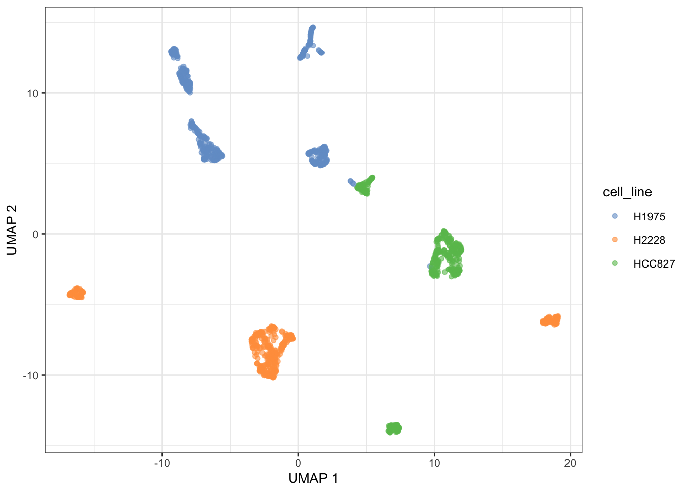

Exercise 4: Single-cell RNA-seq
James Khaznadar
2026-05-27
Last updated: 2026-05-27
Checks: 7 0
Knit directory: BIO334_Robinson/
This reproducible R Markdown analysis was created with workflowr (version 1.7.2). The Checks tab describes the reproducibility checks that were applied when the results were created. The Past versions tab lists the development history.
Great! Since the R Markdown file has been committed to the Git repository, you know the exact version of the code that produced these results.
Great job! The global environment was empty. Objects defined in the global environment can affect the analysis in your R Markdown file in unknown ways. For reproduciblity it’s best to always run the code in an empty environment.
The command set.seed(20260522) was run prior to running
the code in the R Markdown file. Setting a seed ensures that any results
that rely on randomness, e.g. subsampling or permutations, are
reproducible.
Great job! Recording the operating system, R version, and package versions is critical for reproducibility.
Nice! There were no cached chunks for this analysis, so you can be confident that you successfully produced the results during this run.
Great job! Using relative paths to the files within your workflowr project makes it easier to run your code on other machines.
Great! You are using Git for version control. Tracking code development and connecting the code version to the results is critical for reproducibility.
The results in this page were generated with repository version de2fad6. See the Past versions tab to see a history of the changes made to the R Markdown and HTML files.
Note that you need to be careful to ensure that all relevant files for
the analysis have been committed to Git prior to generating the results
(you can use wflow_publish or
wflow_git_commit). workflowr only checks the R Markdown
file, but you know if there are other scripts or data files that it
depends on. Below is the status of the Git repository when the results
were generated:
Ignored files:
Ignored: .DS_Store
Ignored: .RData
Ignored: .Rhistory
Ignored: .Rproj.user/
Ignored: analysis/.DS_Store
Ignored: analysis/.Rapp.history
Ignored: data/.DS_Store
Untracked files:
Untracked: airway_subset.rdata
Untracked: analysis/human_protein_lengths.txt
Untracked: exercise4_single_cell.html
Untracked: output/human_protein_lengths.txt
Unstaged changes:
Modified: .Rprofile
Modified: BIO334_Robinson.Rproj
Note that any generated files, e.g. HTML, png, CSS, etc., are not included in this status report because it is ok for generated content to have uncommitted changes.
These are the previous versions of the repository in which changes were
made to the R Markdown
(analysis/khaznadar_james_exercise4.Rmd) and HTML
(docs/khaznadar_james_exercise4.html) files. If you’ve
configured a remote Git repository (see ?wflow_git_remote),
click on the hyperlinks in the table below to view the files as they
were in that past version.
| File | Version | Author | Date | Message |
|---|---|---|---|---|
| html | 3a1f043 | jkhazn | 2026-05-27 | Build site. |
| Rmd | 0d642c4 | jkhazn | 2026-05-27 | add exercise 4 |
Full rendered version with plots: https://jkhazn.github.io/BIO334_Robinson/khaznadar_james_exercise4.html
Getting Started
How many cells do we have for each technology? How many genes? Where is the cell line information stored?
tenx <- load_sc_data()[["sc_10x"]]
cel_seq <- load_sc_data()[["sc_celseq"]]
drop_seq <- load_sc_data()[["sc_dropseq"]]dim(tenx)[1] 16468 902dim(cel_seq)[1] 28204 274dim(drop_seq)[1] 15127 225head(tenx$cell_line)[1] "HCC827" "H1975" "HCC827" "HCC827" "HCC827" "H1975" Merge Datasets
What are potential drawbacks of merging by intersecting genes?
sce_list <- list(tenx, drop_seq, cel_seq) %>%
set_names(c("tenx", "drop_seq", "celseq"))
intersect_genes <- Reduce(intersect, lapply(sce_list, rownames))
overlap_cols <- Reduce(intersect,
lapply(sce_list, function(u) names(colData(u))))
sce_list <- lapply(sce_list, function(sce) {
sce_sub <- sce[intersect_genes, ]
colData(sce_sub) <- colData(sce)[, overlap_cols]
sce_sub
})
sce_com <- do.call(SingleCellExperiment::cbind, sce_list)
sce_com$technology <- rep(names(sce_list), sapply(sce_list, ncol))
colnames(sce_com) <- rownames(colData(sce_com)) <- paste0(sce_com$technology, "_", colnames(sce_com))
rm(sce_list, tenx, drop_seq, cel_seq)
gc() used (Mb) gc trigger (Mb) limit (Mb) max used (Mb)
Ncells 11246682 600.7 16819838 898.3 NA 14299871 763.7
Vcells 48341123 368.9 119598213 912.5 16384 118716502 905.8Combined Dataset
How many cells and genes are left? Which assays are present? Where is the technology info?
dim(sce_com)[1] 13575 1401assayNames(sce_com)[1] "counts" "logcounts"head(sce_com$technology)[1] "tenx" "tenx" "tenx" "tenx" "tenx" "tenx"Pre-processing
sce_com <- normalizeRnaCounts.se(sce_com)sce_com <- chooseRnaHvgs.se(sce_com, top = 1500, num.threads = nthreads)
top.hvgs <- which(rowData(sce_com)$hvg)set.seed(00101)
sce_com <- runPca.se(sce_com, features = top.hvgs, num.threads = nthreads)
sce_com <- runUmap.se(sce_com, num.dim = 2, num.threads = nthreads)Question 1 — Batch Effect
Do you find a batch effect caused by the different technologies? Which technologies are most similar?
plotUMAP(sce_com, colour_by = "technology")
| Version | Author | Date |
|---|---|---|
| 3a1f043 | jkhazn | 2026-05-27 |
plotUMAP(sce_com, colour_by = "cell_line")
| Version | Author | Date |
|---|---|---|
| 3a1f043 | jkhazn | 2026-05-27 |
Yes, there is a batch effect. CELseq clusters separately, 10x and Drop-seq are most similar.
Question 2 — Clustering
Do cells of different cell lines cluster separately?
set.seed(00101)
sce_com <- clusterGraph.se(sce_com, num.threads = nthreads, output.name = "cluster")
sce_com$cluster <- factor(sce_com$cluster)
plotUMAP(sce_com, colour_by = "cluster")
| Version | Author | Date |
|---|---|---|
| 3a1f043 | jkhazn | 2026-05-27 |
plotUMAP(sce_com, colour_by = "cell_line")
| Version | Author | Date |
|---|---|---|
| 3a1f043 | jkhazn | 2026-05-27 |
table(sce_com$cluster, sce_com$cell_line)
H1975 H2228 HCC827
1 1 0 274
2 177 0 0
3 135 0 0
4 0 89 0
5 0 226 0
6 91 0 0
7 1 0 68
8 0 65 0
9 112 0 0
10 0 81 0
11 2 0 79Yes, cells cluster by cell line as confirmed by the UMAP and table, but maybe change count of clusters, i would probably use a cluster size of 3 given the three cell lines to tell.
Question 3 — Marker Genes (optional)
What are the marker genes for each cluster? How many markers do you find? Why do we only find so few markers for some clusters?
Question 4 — Cell Type Annotation (optional)
Use a reference dataset from ExperimentHub to annotate the cells. Do you see a problem with the annotation?
sessionInfo()R version 4.6.0 (2026-04-24)
Platform: aarch64-apple-darwin23
Running under: macOS Tahoe 26.5
Matrix products: default
BLAS: /Library/Frameworks/R.framework/Versions/4.6/Resources/lib/libRblas.0.dylib
LAPACK: /Library/Frameworks/R.framework/Versions/4.6/Resources/lib/libRlapack.dylib; LAPACK version 3.12.1
locale:
[1] en_US.UTF-8/en_US.UTF-8/en_US.UTF-8/C/en_US.UTF-8/en_US.UTF-8
time zone: Europe/Zurich
tzcode source: internal
attached base packages:
[1] stats4 stats graphics grDevices utils datasets methods
[8] base
other attached packages:
[1] dplyr_1.2.1 patchwork_1.3.2
[3] ensembldb_2.36.0 AnnotationFilter_1.36.0
[5] GenomicFeatures_1.64.0 AnnotationDbi_1.74.0
[7] pheatmap_1.0.13 SingleR_2.14.0
[9] ExperimentHub_3.2.0 AnnotationHub_4.2.0
[11] BiocFileCache_3.2.0 dbplyr_2.5.2
[13] CellBench_1.28.0 tibble_3.3.1
[15] magrittr_2.0.5 scater_1.40.1
[17] ggplot2_4.0.3 scuttle_1.22.0
[19] scrapper_1.6.3 SingleCellExperiment_1.34.0
[21] SummarizedExperiment_1.42.0 Biobase_2.72.0
[23] GenomicRanges_1.64.0 Seqinfo_1.2.0
[25] IRanges_2.46.0 S4Vectors_0.50.1
[27] BiocGenerics_0.58.1 generics_0.1.4
[29] MatrixGenerics_1.24.0 matrixStats_1.5.0
[31] workflowr_1.7.2
loaded via a namespace (and not attached):
[1] RColorBrewer_1.1-3 rstudioapi_0.18.0 jsonlite_2.0.0
[4] ggbeeswarm_0.7.3 farver_2.1.2 rmarkdown_2.31
[7] BiocIO_1.22.0 fs_2.1.0 vctrs_0.7.3
[10] Rsamtools_2.28.0 memoise_2.0.1 RCurl_1.98-1.18
[13] htmltools_0.5.9 S4Arrays_1.12.0 curl_7.1.0
[16] BiocNeighbors_2.6.0 SparseArray_1.12.2 sass_0.4.10
[19] bslib_0.11.0 httr2_1.2.2 lubridate_1.9.5
[22] cachem_1.1.0 GenomicAlignments_1.48.0 whisker_0.4.1
[25] lifecycle_1.0.5 pkgconfig_2.0.3 rsvd_1.0.5
[28] Matrix_1.7-5 R6_2.6.1 fastmap_1.2.0
[31] digest_0.6.39 rprojroot_2.1.1 irlba_2.3.7
[34] RSQLite_3.53.1 beachmat_2.28.0 labeling_0.4.3
[37] filelock_1.0.3 timechange_0.4.0 httr_1.4.8
[40] abind_1.4-8 compiler_4.6.0 bit64_4.8.2
[43] withr_3.0.2 S7_0.2.2 BiocParallel_1.46.0
[46] viridis_0.6.5 DBI_1.3.0 rappdirs_0.3.4
[49] DelayedArray_0.38.1 rjson_0.2.23 tools_4.6.0
[52] vipor_0.4.7 otel_0.2.0 beeswarm_0.4.0
[55] httpuv_1.6.17 glue_1.8.1 restfulr_0.0.16
[58] callr_3.7.6 promises_1.5.0 grid_4.6.0
[61] getPass_0.2-4 gtable_0.3.6 BiocSingular_1.28.0
[64] ScaledMatrix_1.20.0 XVector_0.52.0 ggrepel_0.9.8
[67] BiocVersion_3.23.1 pillar_1.11.1 stringr_1.6.0
[70] later_1.4.8 lattice_0.22-9 rtracklayer_1.72.0
[73] bit_4.6.0 tidyselect_1.2.1 Biostrings_2.80.0
[76] knitr_1.51 git2r_0.36.2 gridExtra_2.3
[79] ProtGenerics_1.44.0 xfun_0.57 UCSC.utils_1.7.1
[82] stringi_1.8.7 lazyeval_0.2.3 yaml_2.3.12
[85] cigarillo_1.2.0 evaluate_1.0.5 codetools_0.2-20
[88] BiocManager_1.30.27 cli_3.6.6 processx_3.9.0
[91] jquerylib_0.1.4 GenomeInfoDb_1.48.0 Rcpp_1.1.1-1.1
[94] png_0.1-9 XML_3.99-0.23 parallel_4.6.0
[97] assertthat_0.2.1 blob_1.3.0 bitops_1.0-9
[100] viridisLite_0.4.3 scales_1.4.0 purrr_1.2.2
[103] crayon_1.5.3 rlang_1.2.0 KEGGREST_1.52.0